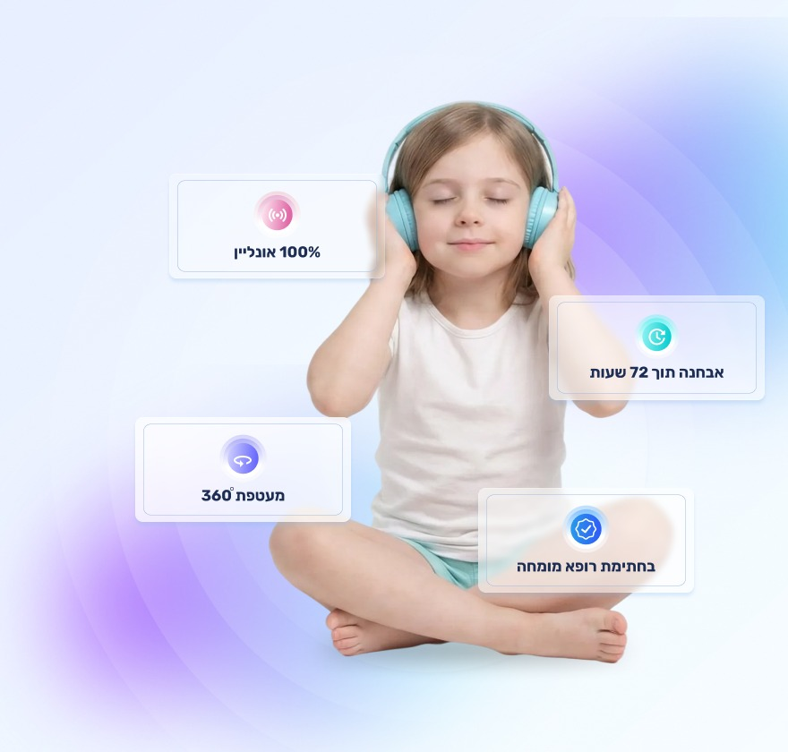
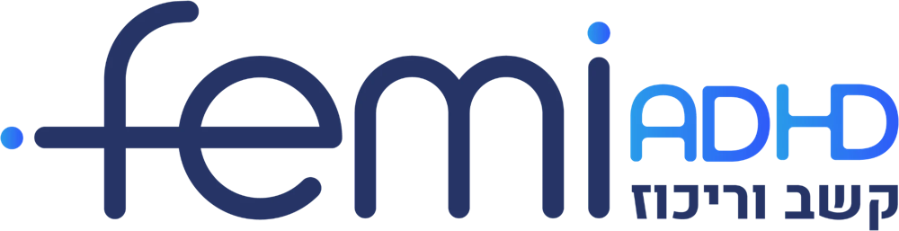
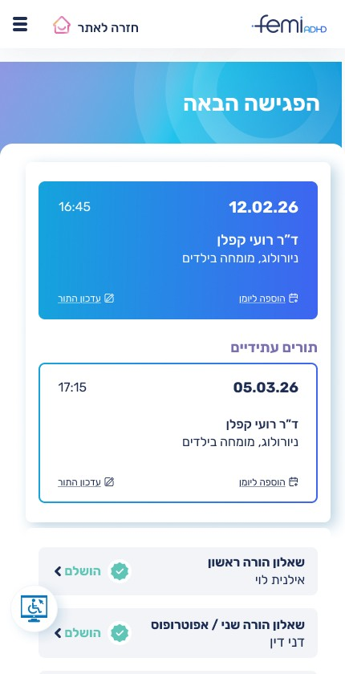
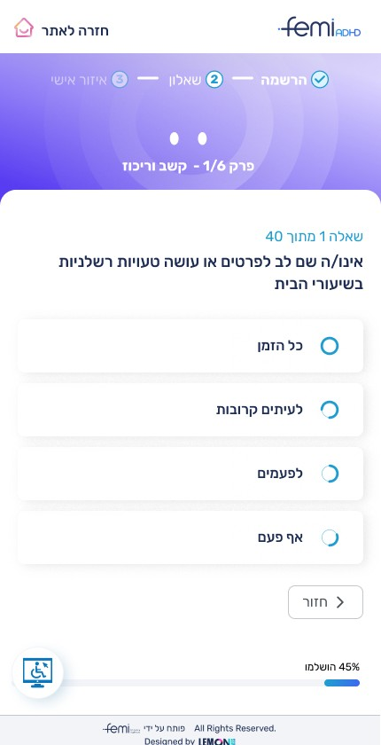

הכירו את Femi ADHD, שירות חדש מבית Femi, החברה הגדולה והמובילה בתחום שירותי הבריאות הדיגיטלית, עם למעלה מ‑35 שנות ניסיון בניהול שירותי בריאות מורכבים ורפואה מרחוק.
השירות נולד במטרה ליצור סטנדרט חדש באבחון ובטיפול בהפרעות קשב וריכוז בישראל, באמצעות שילוב של חדשנות טכנולוגית, מקצועיות רפואית ומעטפת טיפול מקיפה ומותאמת אישית, בתהליך דיגיטלי נגיש, מהיר ונוח מהבית.
שאלון לבדיקת הסבירות ל‑ADHD והצורך באבחון מלא.
מההערכה הראשונית ועד לקבלת ההמלצות.
קבלת תור לרופא בתוך ימים בודדים וסיכום אבחון והמלצות בתוך כ‑72 שעות מהפגישה.
אבחון אונליין מכל מקום בארץ וללא צורך בנסיעות למרפאה.
על ידי רופאים מוסמכים, כולל בירור רפואי לזיהוי מצבים נוספים שעשויים לגרום לתסמינים דומים.
בחינת כלל היבטי החיים של המטופל, בבית, בלימודים, בעבודה ובקשרים החברתיים.
המלצות לטיפול רגשי, התנהגותי, תרופתי או שילוב ביניהם, בהתאם לצורך.
למרות הביקוש הגבוה, תהליך האבחון והטיפול בהפרעות קשב וריכוז עדיין ארוך ומורכב, בשל:
בעוד שכ‑15%-20% מהילדים זקוקים לאבחון ADHD, רק 7%-10% מאובחנים בפועל.
פחות מ‑1% מהמבוגרים פונים לאבחון, אף שהשכיחות המשוערת של ADHD באוכלוסייה עומדת על כ‑2%-3%.
קשיים לימודיים וחברתיים, קשיי ויסות רגשי ופגיעה בביטחון העצמי ובתחושת המסוגלות.
דאגה, חוסר ודאות ותסכול, לצד מתחים וקשיים בהתנהלות המשפחתית.
קשיים בהתארגנות, בניהול זמן, בתפקוד בלימודים ובעבודה ובמערכות יחסים.
תהליך דיגיטלי, נגיש ופשוט ובמקום אחד - החל ממילוי השאלונים ועד קבלת אבחנה מלאה והמלצות לטיפול.


נרשמים למערכת וממלאים את השאלונים הרלוונטיים בהתאם לסוג האבחון.
לאחר השלמת השאלונים והסדרת התשלום.
מפגש וידאו עם רופא המוסמך לאבחן ולטפל בהפרעות קשב וריכוז.
קבלת סיכום האבחון והמלצות להמשך טיפול בהתאמה אישית.
שיתוף פעולה עם Femi ADHD מאפשר לרשויות ולארגונים להעניק לאוכלוסיות שהם משרתים גישה לאבחון ולטיפול מקצועי בהפרעות קשב וריכוז, תוך צמצום חסמי זמן ומרחק ומתן מענה רפואי מותאם אישית.
תאמו איתנו פגישה